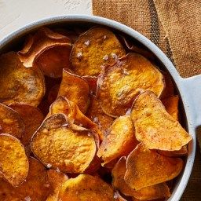

Homemade Potato Chip Recipe

Crispy. Salty. Heaven. Is there anything better than the crunch of freshly fried Homemade Potato Chips?? I'll easily say "no thank you," to ice cream,
chocolate, or any other sweet. But offer me a potato chip? Yes, please; always yes. And then if you walk away and leave me with that bag/bowl... Well, be warned when you return
there may not be any chips left
Ingredients:
- Potatos
- Vegetable Oil
- Salt or any other seasonings you would like
Step-by-Step instructions:
- Get a mandoline and then slice your potatoes super thin!
- Soak the potatoes in an ice bath.
- drain the potatoes and pat dry.
- Fry in hot oil. Be sure to get your oil to about 350-365 degrees
- No matter what you do with them, (fold or leave flat), after a few minutes and they begin to brown, remove them from the hot oil and let drain on a paper towel-lined plate, in a single layer, and then sprinkle with salt.
Home